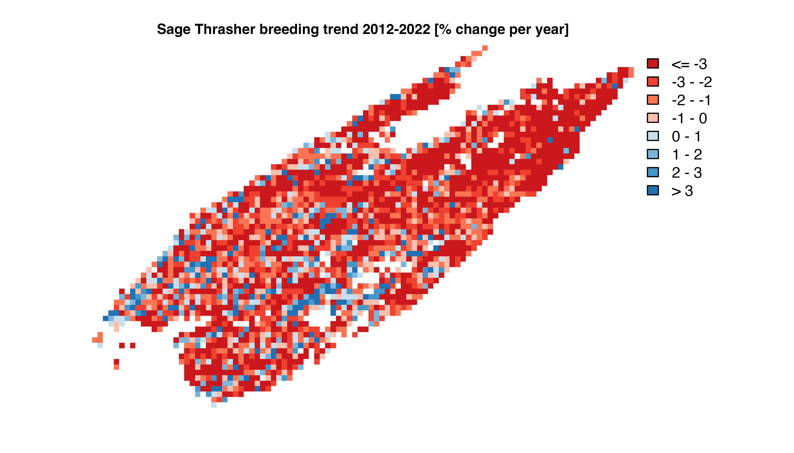

The eBird Trends Data Products provide estimates of trends in relative abundance based on eBird data. Trend estimates are made on a 27km by 27km grid for a single season per species (breeding, non-breeding, or resident). For further details on the methodology used to estimate these trends consult the associated paper:
Fink, D., Johnston, A., Strimas-Mackey, M., Auer, T., Hochachka, W. M., Ligocki, S., Oldham Jaromczyk, L., Robinson, O., Wood, C., Kelling, S., & Rodewald, A. D. (2023). A Double machine learning trend model for citizen science data. Methods in Ecology and Evolution, 00, 1–14. https://doi.org/10.1111/2041-210X.14186
Data users who are not comfortable in R can either download the data from the eBird Status and Trends website or jump to the section of exporting data to CSV.
For a list of the available trends for species/season combinations
consult the data frame ebirdst_trends_runs that is provided
with this R package.
library(ebirdst)
library(dplyr)
library(rnaturalearth)
library(sf)
library(terra)
glimpse(ebirdst_trends_runs)
#> Rows: 587
#> Columns: 11
#> $ run_name <chr> "abetow_resident", "acafly_breeding", "acowoo_resident", …
#> $ species_code <chr> "abetow", "acafly", "acowoo", "affeag1", "aldfly", "allhu…
#> $ common_name <chr> "Abert's Towhee", "Acadian Flycatcher", "Acorn Woodpecker…
#> $ season <chr> "resident", "breeding", "resident", "resident", "breeding…
#> $ region <chr> "north_america", "north_america", "north_america", "south…
#> $ start_year <dbl> 2007, 2007, 2007, 2007, 2007, 2007, 2007, 2007, 2007, 200…
#> $ end_year <dbl> 2021, 2021, 2021, 2021, 2021, 2021, 2021, 2020, 2021, 202…
#> $ start_date <chr> "01-04", "05-24", "01-04", "01-04", "06-28", "03-29", "01…
#> $ end_date <chr> "12-28", "07-20", "12-28", "12-28", "07-13", "06-07", "03…
#> $ rsquared <dbl> 0.9021889, 0.8835865, 0.8989282, 0.7669864, 0.7061864, 0.…
#> $ beta0 <dbl> -0.266613454, 0.614084165, 0.091665165, 0.528998734, -0.2…Information is provided on the model run for each species including
two measures of two predictive performance metrics
(rsquared and beta0) that are based on a
comparison of actual and estimated trends for a suite of simulations
(see Fink et al. 2023 for further details). The columns in this data
frame are as follows:
species_code: the alphanumeric eBird species code
uniquely identifying the species.common_name: the English common name of the
species.season: season that the trend was estimated for:
breeding, nonbreeding, or resident.region: the geographic region that the trend model was
run for. Note that broadly distributed species (e.g. Barn Swallow) will
only have trend estimates for a regional subset of their full
range.start_year/end_year: the start and end years of the
trend time period.start_date/end_date: the start and end dates
(MM-DD format) of the season for which the trend was
estimated.rsquared: R-squared value comparing the actual and
estimated trends from the simulations.beta0: the slope of a linear model fitting actual
vs. estimated trends (actual ~ estimated) for the
simulations. Positive values of beta0 indicate that the
models are systematically underestimating the simulated trend
for this species.Trends data access is granted through an Access Request Form at: https://ebird.org/st/request. Access with this form generates a key to be used with this R package and is provided immediately (as long as commercial use is not requested). Our terms of use have been designed to be quite permissive in many cases, particularly academic and research use. When requesting data access, please be sure to carefully read the terms of use and ensure that your intended use is not restricted.
After completing the Access Request Form, you will be provided a
Status and Trends access key, which you will need when downloading data.
To store the key so the package can access it when downloading data, use
the function set_ebirdst_access_key("XXXXX"), where
"XXXXX" is the access key provided to you. Restart
R after setting the access key.
Trends data can be downloaded for all species using
download_ebird_trends(). Note that trends data are much
smaller in size so are downloaded all at once in contrast to the Status
Data Products, which are downloaded on a per-species basis.
The data are stored in a parquet file, a open source format for efficiently storing tabular data. By default, the location of this file is chosen by the R package and can be viewed with:
get_trends_path()
#> [1] "/Users/mes335/data/ebirdst/2021/trends/ebird-trends_2021.parquet"The trends data for all species, or a subset of species, can be
loaded into R using the function load_trends(). This
function takes a list of run names, which can be found in
ebirdst_trends_runs, and the path to the trends data
parquet file. For example, we’ll load the breeding season trends data
for Sage Thrasher, a migratory species native to Western North American
sagebrush
steppe.
# identify the run for sage thrasher
sagthr_run <- filter(ebirdst_trends_runs, common_name == "Sage Thrasher")
# sage thrasher has a breeding season trends
# load the data into R
sagthr_trends <- load_trends(sagthr_run$run_name)
glimpse(sagthr_trends)
#> Rows: 2,626
#> Columns: 13
#> $ species_code <chr> "sagthr", "sagthr", "sagthr", "sagthr", "sagthr", "sag…
#> $ season <chr> "breeding", "breeding", "breeding", "breeding", "breed…
#> $ srd_id <int> 249761, 254256, 254258, 254264, 255757, 255758, 255764…
#> $ longitude <dbl> -120.3498, -122.6298, -121.8935, -119.6846, -122.4022,…
#> $ latitude <dbl> 50.07224, 49.35282, 49.35282, 49.35282, 49.11302, 49.1…
#> $ abd <dbl> 7.890115e-05, 1.894355e-04, 5.109199e-07, 8.267087e-04…
#> $ abd_ppy <dbl> -0.18723272, -3.61560800, -2.45742859, -0.06229821, -1…
#> $ abd_ppy_lower <dbl> -3.151492, -6.751502, -6.397155, -5.261203, -9.675854,…
#> $ abd_ppy_upper <dbl> 2.9550936, -0.9087975, 3.8106974, 9.8925997, 2.1489321…
#> $ abd_ppy_nonzero <lgl> FALSE, TRUE, FALSE, FALSE, FALSE, FALSE, FALSE, FALSE,…
#> $ abd_trend <dbl> -2.5895948, -40.2835517, -29.4139623, -0.8686519, -13.…
#> $ abd_trend_lower <dbl> -36.12939, -62.41749, -60.36794, -53.07653, -75.94230,…
#> $ abd_trend_upper <dbl> 50.338333, -11.998235, 68.806638, 274.591801, 34.67085…Columns beginning with abd_ppy provide estimates of the
percent per year trend and 80% confidence intervals, while those
beginning with abd_trend provide estiamtes of the
cumulative trend and 80% confidence intervals over the time period. For
a full list of column descriptions see the function documentation
?load_trends.
For those data users who would prefer to access the data in more
traditional CSV format for use outside of R the following code chunks
can be used. For users who are comfortable with R, we strongly
encourage skipping this section and using the
load_trends() function described above to load the data
into R; working with the trends data in R will be much
easier. To download and export the full trends dataset to CSV
use:
library(ebirdst)
library(readr)
# download data
download_ebird_trends()
# load into R
trends <- load_trends()
# write to csv
# be sure to modify the path to the csv file to save the file to directory of
# your choice on your hard drive
write_csv(trends, "ebird-trends_all-species_2021.csv")To download the trends dataset and export a subset of species based on common names to CSV use:
library(ebirdst)
library(dplyr)
library(readr)
# modify this list of common names
common_names <- c("Sage Thrasher", "Sagebrush Sparrow")
# download data
download_ebird_trends()
# load into R
trends <- load_trends()
# subset to chosen species
species_codes <- ebirdst_trends_runs[
ebirdst_trends_runs$common_name %in% common_names,
"species_code", drop = TRUE]
# write to csv
# be sure to modify the path to the csv file to save the file to directory of
# your choice on your hard drive
write_csv(trends[trends$species_code %in% species_codes, ],
"ebird-trends_selected-species_2021.csv")The eBird trends data are stored in a tabular format, where each row gives the trend estimate for a single cell in a 27km x 27km equal area grid. For each grid cell, the coordinates (longitude and latitude) are provided for the center of the grid cell. For many applications, an explicitly spatial format is more useful and these coordinates can be use to convert from the tabular format to either a vector or raster format.
The tabular trend data can be converted into point vector featurs for
use with the sf package using the sf function
st_as_sf().
trends_sf <- st_as_sf(sagthr_trends, coords = c("longitude", "latitude"),
crs = 4326)
print(trends_sf)
#> Simple feature collection with 2626 features and 11 fields
#> Geometry type: POINT
#> Dimension: XY
#> Bounding box: xmin: -122.6298 ymin: 33.04599 xmax: -102.8474 ymax: 50.07224
#> Geodetic CRS: WGS 84
#> # A tibble: 2,626 × 12
#> species_code season srd_id abd abd_ppy abd_ppy_lower abd_ppy_upper
#> * <chr> <chr> <int> <dbl> <dbl> <dbl> <dbl>
#> 1 sagthr breeding 249761 0.0000789 -0.187 -3.15 2.96
#> 2 sagthr breeding 254256 0.000189 -3.62 -6.75 -0.909
#> 3 sagthr breeding 254258 0.000000511 -2.46 -6.40 3.81
#> 4 sagthr breeding 254264 0.000827 -0.0623 -5.26 9.89
#> 5 sagthr breeding 255757 0.00000104 -1.04 -9.68 2.15
#> 6 sagthr breeding 255758 0.00000121 -1.74 -5.26 4.12
#> 7 sagthr breeding 255764 0.00726 -3.14 -9.34 3.31
#> 8 sagthr breeding 255766 0.000517 -0.775 -7.14 3.80
#> 9 sagthr breeding 257265 0.0181 -6.04 -12.4 -1.63
#> 10 sagthr breeding 257266 0.00398 1.82 -4.29 7.57
#> # ℹ 2,616 more rows
#> # ℹ 5 more variables: abd_ppy_nonzero <lgl>, abd_trend <dbl>,
#> # abd_trend_lower <dbl>, abd_trend_upper <dbl>, geometry <POINT [°]>These points can then be exported to GeoPackage for use in a GIS such as QGIS or ArcGIS with
# be sure to modify the path to the file to save the file to directory of
# your choice on your hard drive
write_sf(trends_sf, "ebird-trends_sagthr_2021.gpkg",
layer = "sagthr_trends")The tabular trend estimates can most easily be converted to raster
format for use with the terra package using the function
rasterize_trends(). Any of the columns in the trends data
frame can be selected using the layers argument and
converted into layers in the resulting raster object.
# rasterize the percent per year trend with confidence limits (default)
ppy_raster <- rasterize_trends(sagthr_trends)
print(ppy_raster)
#> class : SpatRaster
#> dimensions : 72, 98, 3 (nrow, ncol, nlyr)
#> resolution : 26665.26, 26665.28 (x, y)
#> extent : -10602273, -7989077, 3661218, 5581118 (xmin, xmax, ymin, ymax)
#> coord. ref. : +proj=sinu +lon_0=0 +x_0=0 +y_0=0 +R=6371007.181 +units=m +no_defs
#> source(s) : memory
#> names : abd_ppy, abd_ppy_lower, abd_ppy_upper
#> min values : -9.012455, -15.5160826, -6.177617
#> max values : 6.019554, 0.9326682, 12.022050
# rasterize the cumulative trend estimate
trends_raster <- rasterize_trends(sagthr_trends, layers = "abd_trend")
print(ppy_raster)
#> class : SpatRaster
#> dimensions : 72, 98, 3 (nrow, ncol, nlyr)
#> resolution : 26665.26, 26665.28 (x, y)
#> extent : -10602273, -7989077, 3661218, 5581118 (xmin, xmax, ymin, ymax)
#> coord. ref. : +proj=sinu +lon_0=0 +x_0=0 +y_0=0 +R=6371007.181 +units=m +no_defs
#> source(s) : memory
#> names : abd_ppy, abd_ppy_lower, abd_ppy_upper
#> min values : -9.012455, -15.5160826, -6.177617
#> max values : 6.019554, 0.9326682, 12.022050These raster objects can be exported to GeoTIFF files for use in a GIS such as QGIS or ArcGIS with
writeRaster(trends_raster, filename = "ebird-trends_sagthr_2021.tif")A simple map of these data can be produced from the raster data. For example, we’ll make a map of percent per year change in relative abundance for Sage Thrasher. Note that this is slightly different than the trends maps on the Status and Trends website, which show the cumulative trend rather than the annual trend.
# define breaks and palettes similar to those on s&t website
breaks <- seq(0, 4, by = 1)
breaks[1] <- global(abs(ppy_raster[["abd_ppy"]]),
min, na.rm = TRUE)[[1]] / 2
breaks[length(breaks)] <- Inf
breaks <- c(-rev(breaks), breaks)
pal <- trends_palette(length(breaks) - 1)
# make a simple map
plot(ppy_raster[["abd_ppy"]],
col = pal, breaks = breaks,
main = "Sage Thrasher abundance trend 2007-2021 [% change per year]",
axes = FALSE, legend = FALSE)
eBird trend estimates are made on a 27km by 27km grid, which allows
summarization over broader regions. The goal of summarization is
typically to produce a mean trend in relative abundance for a region
such as a state. Since the relative abundance of a species varies
throughout it’s range, we need to weight the mean trend calculation by
relative abundance (abd in the trends data frame). For
example, let’s calculate the state-level mean percent per year trends in
relative abundance for Sage Thrasher.
# boundaries of states in the united states
states <- ne_states(iso_a2 = "US", returnclass = "sf") %>%
transmute(state_code = iso_3166_2,
state_name = name) %>%
st_transform(crs = st_crs(trends_sf))
# attach state to the trends data
trends_states <- st_join(trends_sf, states, left = FALSE)
# abundance-weighted average in region
trends_states %>%
st_drop_geometry() %>%
group_by(state_code, state_name) %>%
summarize(abd_ppy = sum(abd * abd_ppy) / sum(abd),
.groups = "drop") %>%
arrange(abd_ppy)
#> # A tibble: 13 × 3
#> state_code state_name abd_ppy
#> <chr> <chr> <dbl>
#> 1 US-WA Washington -5.39
#> 2 US-SD South Dakota -4.06
#> 3 US-OR Oregon -3.59
#> 4 US-MT Montana -3.53
#> 5 US-CA California -3.30
#> 6 US-UT Utah -2.62
#> 7 US-CO Colorado -2.59
#> 8 US-ID Idaho -2.21
#> 9 US-NV Nevada -2.03
#> 10 US-WY Wyoming -1.88
#> 11 US-NE Nebraska -1.46
#> 12 US-NM New Mexico -1.22
#> 13 US-AZ Arizona -0.938Based on these data, Sage Thrasher populations appear to be in decline throughout their entire range; however, some states (e.g. Washington) are experiencing much steeper declines than others (e.g. Arizona).
In some cases, we may be interested in the trend for an entire community of birds, which can be estimated by calculating the cell-wise mean trend across a suite of species. For example, the eBird Trends Data Products contain trend estimates for three species that breedin sabrush sagebrush: Brewer’s Sparrow, Sagebrush Sparrow, and Sage Thrasher. We can calculate an average trend for this group of species, which will provide an estimate of the trend in the sagebrush bird community.
# load trends for sagebrush species
sagebrush_species <- c("Brewer's Sparrow", "Sagebrush Sparrow", "Sage Thrasher")
sagebrush_runs <- filter(ebirdst_trends_runs,
common_name %in% sagebrush_species)
trends_sagebrush_species <- load_trends(sagebrush_runs$run_name)
# calculate mean trend for each cell
trends_sagebrush <- trends_sagebrush_species %>%
group_by(srd_id, latitude, longitude) %>%
summarize(n_species = n(),
abd_ppy = mean(abd_ppy, na.rm = TRUE),
.groups = "drop")
head(trends_sagebrush)
#> # A tibble: 6 × 5
#> srd_id latitude longitude n_species abd_ppy
#> <int> <dbl> <dbl> <int> <dbl>
#> 1 180719 61.1 -135. 1 0.937
#> 2 182217 60.9 -136. 1 -0.862
#> 3 182218 60.9 -135. 1 -1.49
#> 4 182219 60.9 -135. 1 -0.442
#> 5 182220 60.9 -135. 1 -0.859
#> 6 182221 60.9 -134. 1 0.728